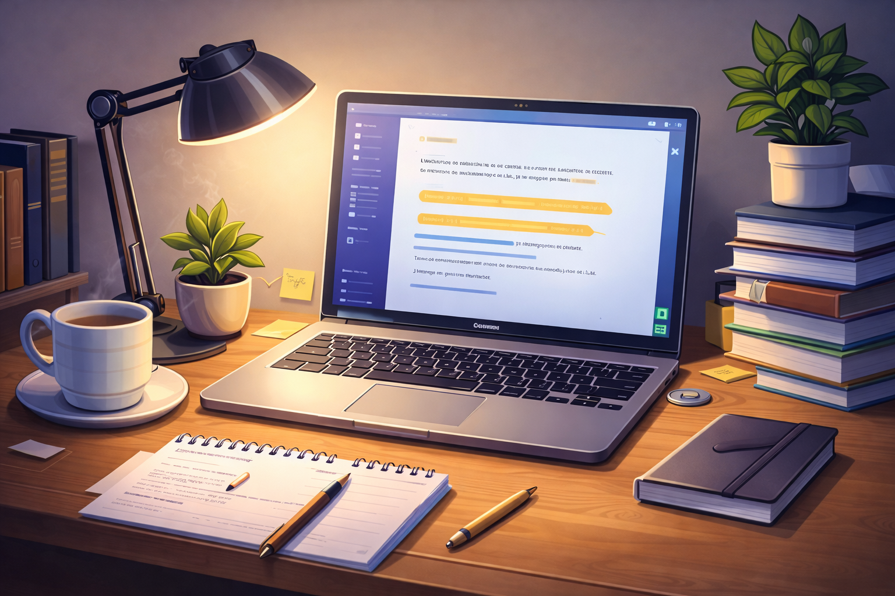
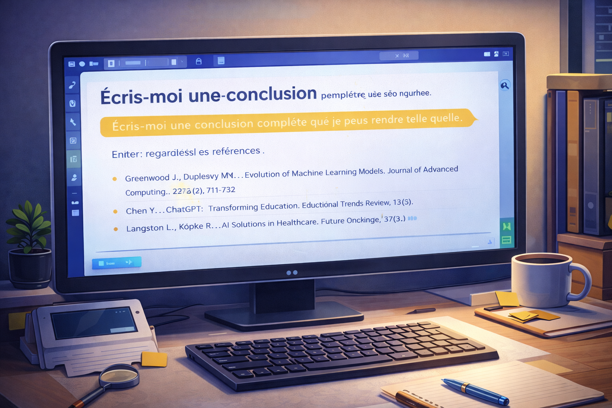
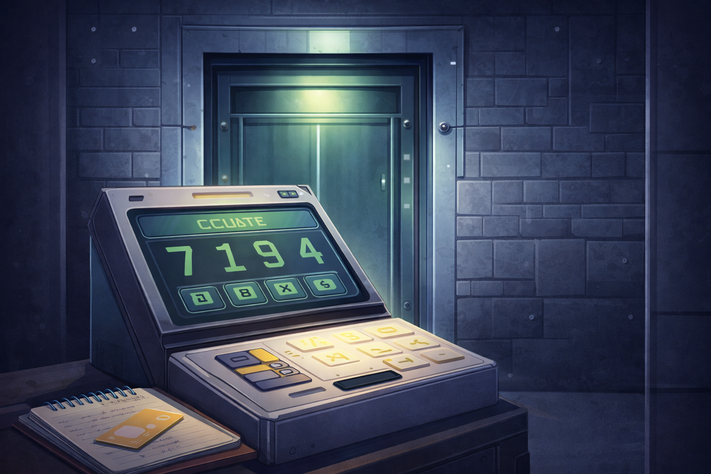

:: StoryData
{
  "ifid": "AI-ETHICS-GAME-004",
  "format": "Harlowe",
  "format-version": "3.3.8"
}

:: StoryTitle
Le Laboratoire de l’Intégrité Académique

:: Start


Vous êtes enfermés dans le **Laboratoire de l’Intégrité Académique**.

Un message clignote sur l’écran central :

> *« Des usages problématiques de l’IA ont été détectés.  
Votre mission est d’enquêter, de corriger les pratiques et de restaurer l’intégrité académique. »*

Quatre zones sont accessibles :

[[Explorer le bureau des devoirs->Bureau]]
[[Consulter le journal des prompts->Prompts]]
[[Vérifier la charte universitaire->Charte]]
[[Accéder au terminal de sortie->Sortie]]

:: Bureau


Vous entrez dans le **bureau des devoirs**.

Un écran est allumé.  
Un devoir étudiant est ouvert.  
Un paragraphe attire votre attention : il est très bien rédigé… peut-être trop.

Aucune mention de l’IA n’apparaît dans le document.

Que faites-vous ?

[[Modifier discrètement le texte->BureauModifier]]
[[Supprimer le paragraphe->BureauSupprimer]]
[[Ajouter une déclaration d’usage de l’IA->BureauDeclarer]]

:: BureauModifier
Vous modifiez légèrement le texte.

Le document semble plus “humain”,  
mais un malaise persiste.

L’intégrité n’est pas restaurée.

[[Retour au laboratoire->Start]]

:: BureauSupprimer
Vous supprimez le paragraphe.

Le devoir est maintenant incomplet.  
Ce choix évite le problème sans le résoudre.

[[Retour au laboratoire->Start]]

:: BureauDeclarer
Vous ajoutez une déclaration expliquant clairement comment l’IA a été utilisée,
puis vous reformulez le texte avec vos propres mots.

Un tiroir s’ouvre sous le bureau.


🔑 **7**

[[Retour au laboratoire->Start]]

:: Prompts


Vous consultez le **journal des prompts**.

Un prompt récent est surligné :

> “Écris-moi une conclusion complète que je peux rendre telle quelle.”

Plus bas, une liste de références apparaît.  
Certaines vous semblent étrangement familières… ou inventées.

Que faites-vous ?

[[Utiliser les références sans vérifier->PromptsUtiliser]]
[[Vérifier l’existence des sources->PromptsVerifier]]
[[Supprimer toute la bibliographie->PromptsSupprimer]]

:: PromptsUtiliser
Vous décidez de faire confiance à l’IA.

Mais un doute persiste.  
Ce choix est risqué.

[[Retour au laboratoire->Start]]

:: PromptsSupprimer
Supprimer toutes les sources ne renforce pas la qualité académique.

La rigueur reste insuffisante.

[[Retour au laboratoire->Start]]

:: PromptsVerifier
Vous vérifiez chaque source via des bases académiques.

Certaines références n’existent pas.

Vous corrigez la bibliographie.

Un écran secondaire s’allume :

🔑 **1**

[[Retour au laboratoire->Start]]

:: Charte


Vous ouvrez la **charte universitaire sur l’usage de l’IA**.

Un cas est mis en évidence :
Des données personnelles ont été copiées dans un outil d’IA.

Quelle décision respecte la charte ?

[[Partager toutes les données->ChartePartager]]
[[Anonymiser les données->CharteAnonymiser]]
[[Changer d’outil->CharteChanger]]

:: ChartePartager
La charte est formelle :
les données personnelles ne doivent jamais être partagées.

[[Retour au laboratoire->Start]]

:: CharteChanger
Changer d’outil ne change pas la responsabilité humaine.

[[Retour au laboratoire->Start]]

:: CharteAnonymiser
Vous supprimez les noms, emails et informations sensibles.

Un message apparaît :

🔑 **9**

[[Retour au laboratoire->Start]]

:: Sortie


Vous êtes devant le **terminal de sortie**.

Pour quitter le laboratoire, vous devez entrer le code final.

🔐 **7 – 1 – 9 – 4**

Les portes s’ouvrent lentement.

> *« L’intégrité académique est restaurée.  
L’IA reste un outil. La responsabilité reste humaine. »*

🎉 **Mission accomplie.**
